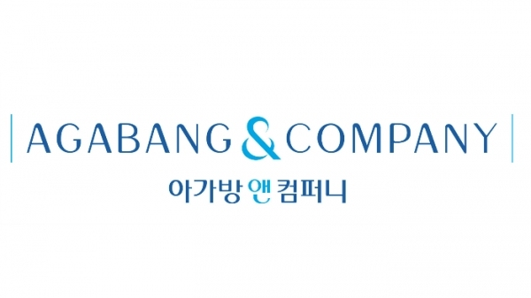

아가방앤컴퍼니 Agabang & Company
1974년 창업한 국내 대표 유아복·유아용품 브랜드
최종 업데이트

아가방앤컴퍼니는 어떤 브랜드인가
1974년 유아복 전문 업체로 창업해 아가방이라는 브랜드로 유아복 시장에 자리잡았다. 이후 유아용품 전반으로 사업을 확장하며 아가방앤컴퍼니로 사명을 정비했다.
국내 유아복 시장의 성장과 함께 매장망을 넓혀갔다. 2015년에는 애경그룹이 최대주주로 편입되며 지배구조가 변화했다.
아가방앤컴퍼니의 브랜드 아이덴티티는 무엇인가
산업화 시대에 창업한 제조 기반 유아복 기업이 이후 대기업 계열로 편입되며 지배구조를 재편한 사례로, 전통 브랜드의 소유권 이전 패턴을 보여준다. 유아복·유아용품 전문성을 기반으로 백화점·전문점 유통망을 확대하며 성장했다.
아가방앤컴퍼니 연혁 — 주요 사건은 언제였나
아가방앤컴퍼니 로고는 어떻게 변해왔나
자주 묻는 질문
아가방앤컴퍼니는 언제 설립되었나요?
아가방앤컴퍼니는 1974년 설립되었습니다.
아가방앤컴퍼니는 어떤 산업의 브랜드인가요?
아가방앤컴퍼니는 미디어·엔터테인먼트 분야의 브랜드입니다.
아가방앤컴퍼니의 브랜드 아이덴티티는 무엇인가요?
산업화 시대에 창업한 제조 기반 유아복 기업이 이후 대기업 계열로 편입되며 지배구조를 재편한 사례로, 전통 브랜드의 소유권 이전 패턴을 보여준다.
아가방앤컴퍼니의 공식 웹사이트는 어디인가요?
아가방앤컴퍼니의 공식 웹사이트는 https://www.agabang.co.kr 입니다.
출처와 검증
아가방앤컴퍼니 관련 참고: 공식 웹사이트. 브랜드명은 한글과 원어를 함께 표기하되 데이터에 없는 표기는 만들지 않습니다. 기원 국가·설립연도는 검수된 정의문에서 확인된 값을 우선하고, 없을 때만 공식 웹사이트 URL이 일치하는 위키데이터 개체의 값을 씁니다.